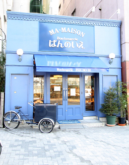
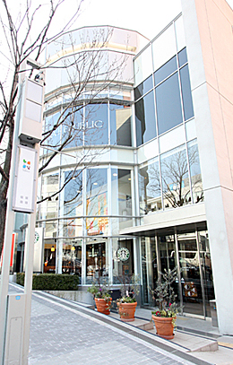
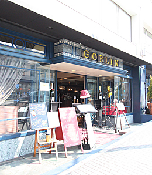
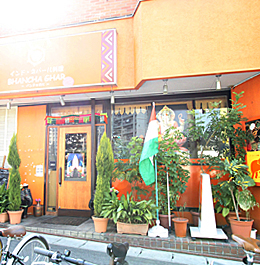

-
ブルーの建物が目を惹くとっても可愛らしいパン屋さん。
お値段はとてもリーズナブルですが、味はピカイチ！
マ・メゾン Boulangerie ぱんのいえ（パン）
●TEL 052-788-2855
●愛知県名古屋市千種区星が丘元町1-4
●営業時間／10:00〜20:00
●定休日／月曜日
-

-
昔からある老舗のフレンチレストラン。
かしこまった感じがなく肩の力を抜いて気軽にフレンチを楽しめるお店です。
店員さんもとても気さくで家族味溢れていてイイ感じ。
しかし長年営んでいるだけあって、味は最高！
誰が食べても美味しいと感じる料理。
フレンチで迷ったら、まず、このお店に行ってみましょう。
ムッシュ・カズ（フレンチ）
●TEL 052-781-0579
●愛知県名古屋市名東区名東本町166 ロイヤルシャトー虹ヶ丘 １Ｆ
●営業時間／11:30〜14:00(ラストオーダー) 17:30〜21:00(ラストオーダー)
●定休日／火曜日

-
広い店内に沢山の種類のパンが並べられ、何を食べようか迷ってしまうほどです。
おすすめはバターロール。
焼きたての香りに惹かれて、いつもたくさんの人で賑わっています。
Johan 星ヶ丘ジョアン店（パン）
●TEL 052-782-6485
●愛知県名古屋市千種区星が丘元町14-14 三越星ヶ丘店 １Ｆ
●営業時間／10:00〜19:30
●定休日／不定休
-
自家製の麺が美味しいうどん、そば屋さん。
ちょっとした小料理も味付けが良く、落ち着いた店内と相まってゆっくりと食事を楽しむ事が出来ます。
ランチメニューもおすすめです。
めん処おぎ野（うどん）
●TEL 052-781-5280
●愛知県名古屋市千種区井上町108

-
タルトが美味しい事で有名なカフェです。
夜遅くまでやっているので使い勝手がよく、お店の雰囲気もお洒落で、とてもよい感じ。
ケーキはボリュームがありお得感満点。
カフェ・マ・メゾン（カフェ）
●TEL 052-783-6773
●愛知県名古屋市千種区星が丘元町1-4 東山大木ビル１F
●営業時間／11:00〜翌2:00
●定休日／無休

-
常連客で賑わう人気店です。
王道を行く味付けのトンカツが人気の秘密。
ごはん、キャベツ、トン汁はおかわり自由なのでお得感満点！
マ・メゾンのとんかつ（とんかつ）
●TEL 052-783-0577
●愛知県名古屋市千種区星が丘元町16-50 星が丘テラスＥＡＳＴ ４Ｆ
●営業時間／11：00〜22：30(ラストオーダー22:00)
●定休日／年中無休

-
犬好きの方には嬉しい、犬と一緒にお店に入れるお洒落なカフェ。
お店には犬用の服も売っています。
犬を連れていなくても、犬好きの人は色んなわんちゃんを見れるのでおすすめです！
犬好きの人の交流の場として人気店になっています。
Dog Garden Cafe 星が丘（カフェ）
●TEL 052-783-3971
●愛知県名古屋市千種区星ケ丘元町16-50 星が丘テラス ＥＡＳＴ ４Ｆ
●営業時間／10:00〜20:00(ラストオーダー19:30)
●定休日／年中無休

-
少しこじんまりとした店内のスタバです。
学生さんが多く利用する事もあり、いつも賑わっています。
スターバックス・コーヒー 星が丘テラス店（カフェ）
●TEL 052-789-0681
●愛知県名古屋市千種区星が丘元町14番25号 星が丘テラスWEST １Ｆ
●営業時間／07:30〜22:00
●定休日／不定休
-

-
お店の雰囲気がとってもいい、デートに使えるお洒落なカフェ。
しかり料理はしっかりと量があり、味のクオリティも高いのでとても満足感があり美味しく頂けます。
犬と同伴できるのも嬉しいサービス。
GOBLIN cafe（カフェ、イタリアン）
●TEL 052-788-2888
●愛知県名古屋市千種区星が丘元町16-50 星が丘テラスＥＡＳＴ １Ｆ
●営業時間／11:00〜24:00
(食事：ラストオーダー22:00 ドリンク：ラストオーダー23:00)
●定休日／不定休
-

-
店員さんがほとんどネパール人という本格派ネパール・インド料理のお店。
明るく活気のある店内で、カレーの味も最高！
お値段の割に料理のボリュームがあり、お腹いっぱい食べられます。
辛さを5段階で選べますが、辛目で注文しても比較的辛さは抑えられており、激辛、というほど辛くはなくとても食べやすくなっています。
ＢＨＡＮＣＨＡ ＧＨＡＲ（ネパール・インド料理）
●TEL 052-781-3329
●愛知県名古屋市千種区星ヶ丘元町15-27
●営業時間／11:00〜15:00 17:00〜22:00
●定休日／無休
-
